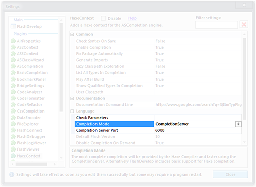
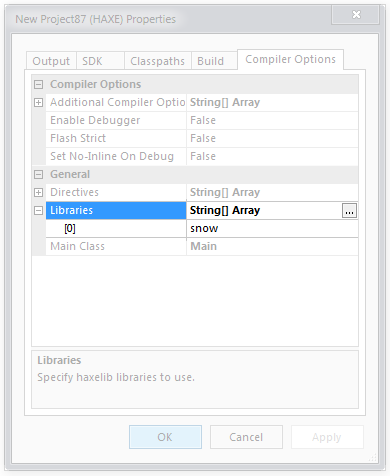

Flash develop template project

Install
Double click the .fdz file that you downloaded for the template project. This will make a new template project show up in FD when you choose File -> New Project.

Autocompletion
To get autocompletion :
- Go to Tools > Program Settings
- In HaxeContext, set the Completion Mode to CompletionServer

Dependencies
Everytime you add a build dependendy to your project.flow, add it to your project settings :
- Go to Project > Properties
- In the Compiler Options tab, add the lib to Libraries

This is only until FD becomes more flexible with its build pipeline.
Thanks to chman for contributing the FD templates.